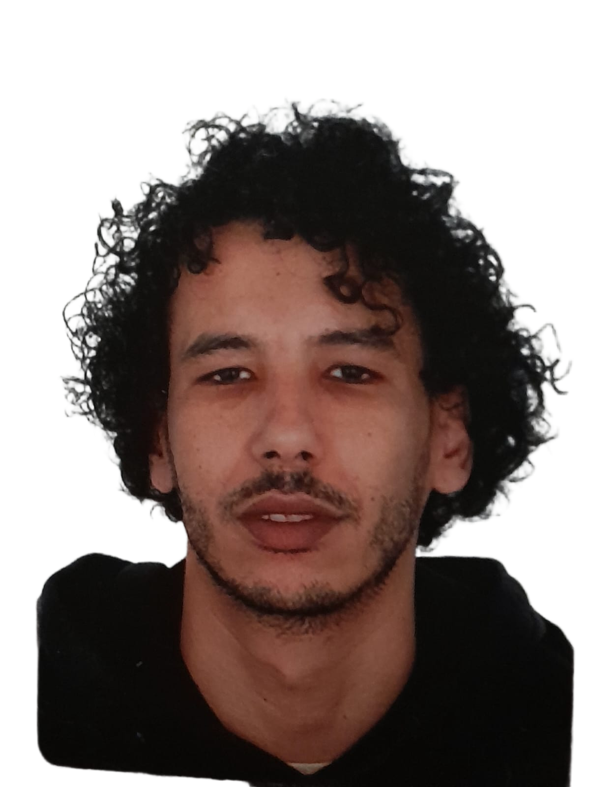
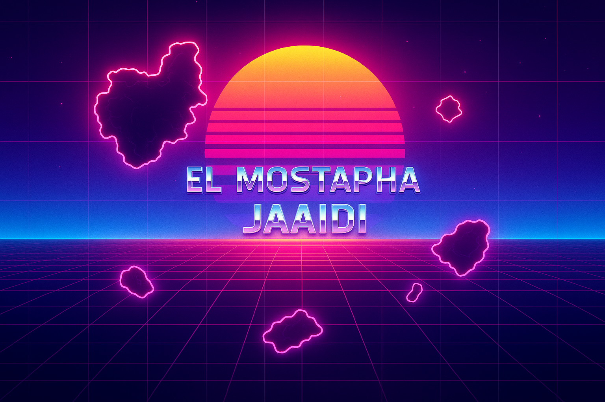

Operaciones Auxiliares de Montaje y Mantenimiento de Sistemas Microinformáticos
Ayuntamiento de Dos Hermanas - Programa EFESO (FSE+)
MF1207_1
MF1208_1
MF1209_1
De los sistemas biológicos a los sistemas informáticos
Un viaje de transformación profesional y pasión tecnológica

Después de explorar los sistemas biológicos, ahora cartografío sistemas informáticos. Mi formación científica me da una perspectiva única para resolver problemas tecnológicos: observación, análisis y método.

Como biólogo, aprendí a observar sistemas complejos, identificar patrones y entender cómo las partes se relacionan para formar un todo. Ahora aplico esa misma mentalidad analítica al mundo de la informática.
Mi travesía comenzó en los laboratorios de Marruecos y España, estudiando agricultura y biología. Pero descubrí que mi verdadera pasión estaba en entender y construir sistemas digitales. La transición fue natural: de analizar ecosistemas a diseñar arquitecturas de software.
Actualmente estoy especializándome en montaje y mantenimiento de sistemas microinformáticos, mientras desarrollo mis habilidades en WordPress, Python y Docker. Cada línea de código es un nuevo organismo que aprender a comprender.
Ayuntamiento de Dos Hermanas - Programa EFESO (FSE+)
Junta de Andalucía - VIRENSIS (MF0219_2 - 60 horas)
Biología (FSSM - Marruecos) + Ingeniería Agrícola (Universidad de Sevilla)
Actualmente estoy cultivando mis habilidades técnicas a través de proyectos prácticos. Como en cualquier investigación científica, comienzo con hipótesis, experimento y aprendo de los resultados.
Este mismo sitio web, desarrollado con HTML5, CSS3 y JavaScript vanilla. Un experimento en diseño interactivo y experiencia de usuario.
Configuración y mantenimiento de equipos microinformáticos. Virtualización con Docker y administración básica de Linux.
Desarrollo de sitios web con WordPress: instalación, configuración, personalización de themes y plugins básicos.
Desarrollo de scripts en Python para automatizar tareas repetitivas y procesamiento básico de datos.
¿Buscas a alguien con mentalidad analítica y pasión por el aprendizaje continuo? Estoy interesado en oportunidades donde pueda aplicar mi perspectiva única como biólogo en transformación hacia la informática.